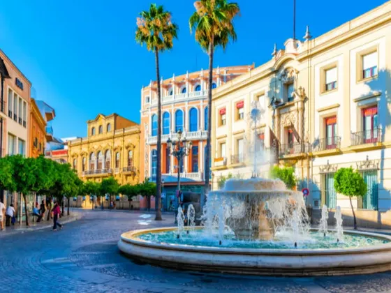

Jerez de la Frontera
Jerez de la Frontera es una ciudad española situada en la provincia de Cádiz, en la comunidad autónoma de Andalucía. Conocida por sus vinos, flamenco y caballos, Jerez es una ciudad con un rico patrimonio histórico y cultural.
Historia
La ciudad de Jerez tiene una larga historia que se remonta a la época fenicia. A lo largo de los siglos, ha sido habitada por romanos, visigodos, musulmanes y cristianos. Durante la Edad Media, Jerez fue una importante ciudad comercial y cultural, conocida por sus vinos y sus artesanías.

Qué ver en Jerez
- La catedral
- El Alcazar
- La Real Escuela Andaluza de Arte Ecuestre
- La Bodega Tío Pepe
- El Museo Arqueológico Municipal
Además, Jerez es famosa por su flamenco, que se puede disfrutar en numerosos tablaos y peñas flamencas de la ciudad. Y, por supuesto, no podemos olvidar sus vinos, especialmente los famosos vinos de Jerez, que se pueden degustar en las bodegas de la ciudad.